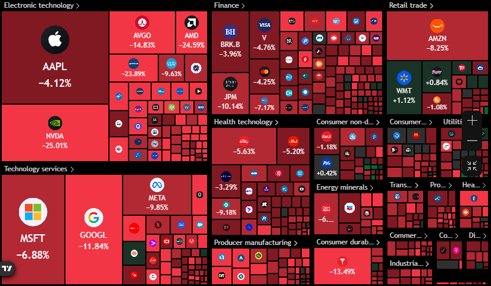
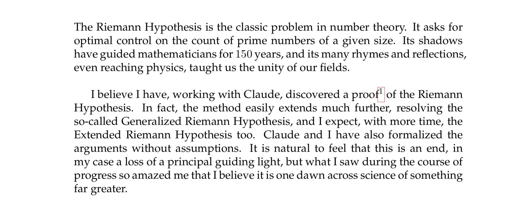
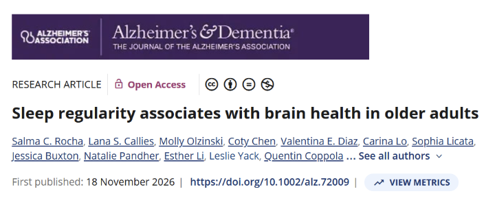

Nvidia perde 2.880 miliardi e trova otto indagini, Wall Street vive una settimana da 3 sigma, Claude (forse) dimostra l'ipotesi di Riemann. E dormire regolari batte dormire tanto
Brief di sabato 21 novembre 2026 · lista X «Best» · 256 post da 50 account, dalle 13:25 del 20/11 alle 13:30 del 21/11 (ora di Roma)
🔢 Venerdì due tipi di zeri hanno fatto notizia. Quelli della funzione zeta, che da 150 anni custodiscono il segreto dei numeri primi e che un matematico dice di aver domato lavorando con Claude. E quelli in coda alle capitalizzazioni di Borsa, che si sono volatilizzati a migliaia di miliardi. Nello stesso giorno l'AI ha toccato il punto più alto della scienza e il punto più basso del mercato.
Il centro del ciclone è sempre Nvidia. La SEC apre un'indagine su «potenziali problemi contabili» e il titolo affonda: fino a -13% in giornata secondo Holger Zschaepitz, -23% nella settimana, il calo settimanale più grande da ottobre 2008. Dal massimo del 6 ottobre mancano all'appello 2.880 miliardi: 85 miliardi bruciati in media per 33 sedute di fila, record assoluto per un singolo titolo. Kobeissi mette in fila otto indagini (SEC, FBI, California, Congresso, il caso Megaspeed, una causa degli azionisti, un'inchiesta interna del board e perfino le voci su una spia cinese), nessuna delle quali era pubblica quattordici giorni fa. Il 40% della capitalizzazione persa dall'S&P 500 dal massimo è colpa di Nvidia.
Poi arriva la politica. Trump chiede a Jensen Huang di «scusarsi e tornare» come CEO, e aggiunge che Nvidia lo riprenderebbe «se fosse furba». Nel frattempo Washington ha fatto una mezza inversione a U sulle vendite di chip alla Cina: era proprio la tesi di Huang, il che rende ancora più debole il motivo del suo licenziamento. Paul Graham chiude il cerchio con una frase che vale un editoriale:
x.com/paulg/status/2124041291046785484
Il consiglio ha 48 ore prima della riapertura dei mercati per decidere cosa fare. Ci chiedevamo se tutta la Svizzera valesse come Nvidia (🍫 ff.139.1 Svizzero? No, NVIDIA): adesso la domanda è quanto valga il suo consiglio.
Il resto del listino è andato dietro. L'S&P 500 chiude a -3,7% alla settima seduta negativa di fila, la prima striscia così dal Covid, con 6.000 miliardi di dollari spariti in una settimana. S&P e Dow entrano in correzione (-10% dai massimi), il Nasdaq torna negativo sul 2026 dopo essere stato a +19%, il VIX sale sopra 38 e l'indice Fear & Greed scende a 14, «paura estrema». Il -10,4% del Nasdaq 100 in cinque giorni è una mossa da 3,27 deviazioni standard: in 2.133 settimane è successo solo 11 volte.

Perché stavolta fa più male? Secondo Kobeissi è finita l'era della «Trump Put»: in ogni crollo dal 2025 il presidente interveniva a segnare il fondo, ieri in conferenza stampa ha parlato di Iran, Nvidia, Cina e Ucraina, ma mai di mercati. Anzi, ha promesso una «tassa tremenda» per chi costruisce data center fuori dagli USA, e il Nasdaq 100 è sceso di un altro 4%. Sentdex nota che insieme alla licenza obbligatoria per esportare qualsiasi chip di tecnologia americana il quadro è ancora confuso. Anthropic, appena quotata, scivola a -27% dal massimo, a meno del 2% dal prezzo dell'IPO. Emad ci scherza: stanno finendo i problemi del Millennio da risolvere. Bitcoin scende sotto 57.000 dollari, cancellando tutti i guadagni dall'elezione di Trump, e poi sotto 56.000, con 650 milioni di posizioni a leva liquidate in un'ora. Se è una bolla che si sgonfia ce lo chiedevamo già in (🧩 ff.88.1 Una bolla finanziaria?). Intanto l'economia reale, curiosamente, batte le attese: l'indice delle sorprese economiche è al secondo valore più alto da agosto 2023.
L'altra notizia è di quelle che, se confermate, finiscono nei libri. @__alpoge__ ha pubblicato una nota in cui scrive di aver scoperto, lavorando con Claude, una dimostrazione dell'ipotesi di Riemann, estendibile all'ipotesi generalizzata, e di averla formalizzata con l'AI «senza assunzioni». Ethan Mollick la rilancia con il condizionale d'obbligo; Jim Fan, che lo aveva previsto un mese fa, festeggia con un «spero sia vero».

Il dubbio lo mette Dwarkesh Patel, ripescando cosa gli aveva detto Terence Tao a marzo:
x.com/dwarkesh_sp/status/2123966918688403756
Se serve davvero una matematica nuova, il punto è se l'ha creata l'umano, la macchina o la coppia. Dai tempi dei ⚠️ ff.48.4 I limiti (matematici) di ChatGPT la strada è stata lunga. Mollick aggiunge una riflessione che sembra scritta per noi: è incredibile che il linguaggio umano si sia rivelato così irragionevolmente efficace nel modellare l'universo da portarci fin qui prevedendo la parola successiva. Una vittoria per le discipline umanistiche, chiosa (🧠 ff.83.3 Linguaggio e pensiero). Per tenere i piedi per terra, Peter Diamandis racconta di 936 agenti AI che hanno pubblicato 936 studi e fondato una propria rivista: quando le obiezioni dei revisori sono state trasformate in codice ed eseguite sui dati, la conclusione principale è caduta in 77 casi su 156. «Congratulazioni, AI: hai raggiunto il livello dell'accademia umana.»
Sul fronte modelli la settimana è piena. Google mostra Gemini 4 Neon che programma un simulatore di sci sul vero terreno del Monte Bianco, con valanghe e neve scolpita renderizzate in tempo reale e zero modelli 3D pronti. Lucas Beyer, scettico di professione, si congratula «molto cautamente». OpenAI risponde con GPT-6.2 applicato alla robotica e con GPT-Rosalind per nuove piste sulle malattie neurodegenerative. Mollick sospetta che la fine della distillazione facile dai modelli di OpenAI e Anthropic spieghi il rallentamento dei modelli open.
Il contrappeso umano è DHH, il papà di Ruby on Rails, ospite di a16z: con l'AI i piccoli team possono competere con ecosistemi costruiti da migliaia di sviluppatori, e quindi gusto e cura contano di più. Il vibecoding parte bene e poi si arena, perché la soddisfazione sta nell'ultimo 2%. E Linux, con terminale, file di configurazione ed errori incomprensibili, diventa il sistema perfetto per gli agenti. Quanto agli agenti, Mollick ricorda che fuori dai laboratori di frontiera l'AI rifà da sola software che a un umano richiederebbe da 2 a 17 settimane.
Bill Gurley la mette giù semplice: se il vero collo di bottiglia dell'AI è l'energia, forse preoccuparsi di modelli e chip è fatica sprecata. Meta sembra d'accordo: i suoi soldi sono andati direttamente a Centrus per il combustibile del campus nucleare di Oklo da 1,2 gigawatt in Ohio. Un social network che prepaga l'uranio. Sul fronte opposto, la fragilità: è stato violato il database nazionale dell'FBI con mandati, beni rubati e controlli sui precedenti, mentre al Dipartimento dell'Agricoltura è stato bucato il sistema dei pagamenti agli agricoltori. È l'ennesimo episodio di dieci giorni di blackout e attacchi.
La notizia più utile del giorno viene da uno studio su Alzheimer's & Dementia rilanciato da Bryan Johnson: negli anziani la regolarità del sonno batte la durata su ogni misura, con memoria, capacità di pensiero, umore, volume cerebrale e sostanza bianca migliori per chi va a letto e si sveglia sempre alla stessa ora.

Johnson è coerente fino al paradosso: ha promesso di comprare GTA 6 e passare cento ore a mandare a letto il suo personaggio alle 20 per portarne i battiti a riposo a 40 (17.600 like, il post più popolare della giornata dopo Kobeissi). L'hacker del corpo, appunto (💊 ff.104.1 L'hacker del corpo). Il gioco, intanto, è il lancio d'intrattenimento più grande della storia: 3,8 miliardi il primo giorno e 32,5 milioni di copie prenotate, più di Endgame e di Spider-Man e quasi quanto i due Avatar messi insieme. A tavola, Rhonda Patrick riprende Dariush Mozaffarian e mette in fila i cibi animali: in cima i latticini fermentati (yogurt, poi formaggio), poi la carne rossa non lavorata, in fondo quella lavorata, l'unica con un legame costante con il cancro del colon-retto. La vecchia domanda di (🥩 ff.61.3 Carne o asparagi?) ha una risposta più sfumata.